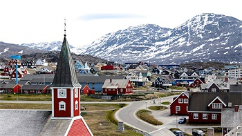

Prima Prova
Indica quale tra queste capitali di stato è più a nord!
inserisci il nome nella casella sottostante

|
|
|
Città di Oslo |
Città di Norlisk |

|
 |
|
Città di Reykjavik |
Città di Nuuk |
"Presentazione della capitale"
Plasmata dall'energia del globo, ricca dell'energia di una capitale cosmopolita, circondata dalla pura e incontaminata energia della natura, Reykjavík è una città di forti contrasti. Graziose abitazioni rivestite di lamiera ondulata coesistono a fianco di futuristiche costruzioni in vetro; attrezzature ultramoderne si trovano a due passi dal terreno vulcanico primordiale; e le influenze internazionali si mescolano alle tradizioni popolari islandesi sì da creare una cultura unica, dove l'antichità si unisce alla modernità.